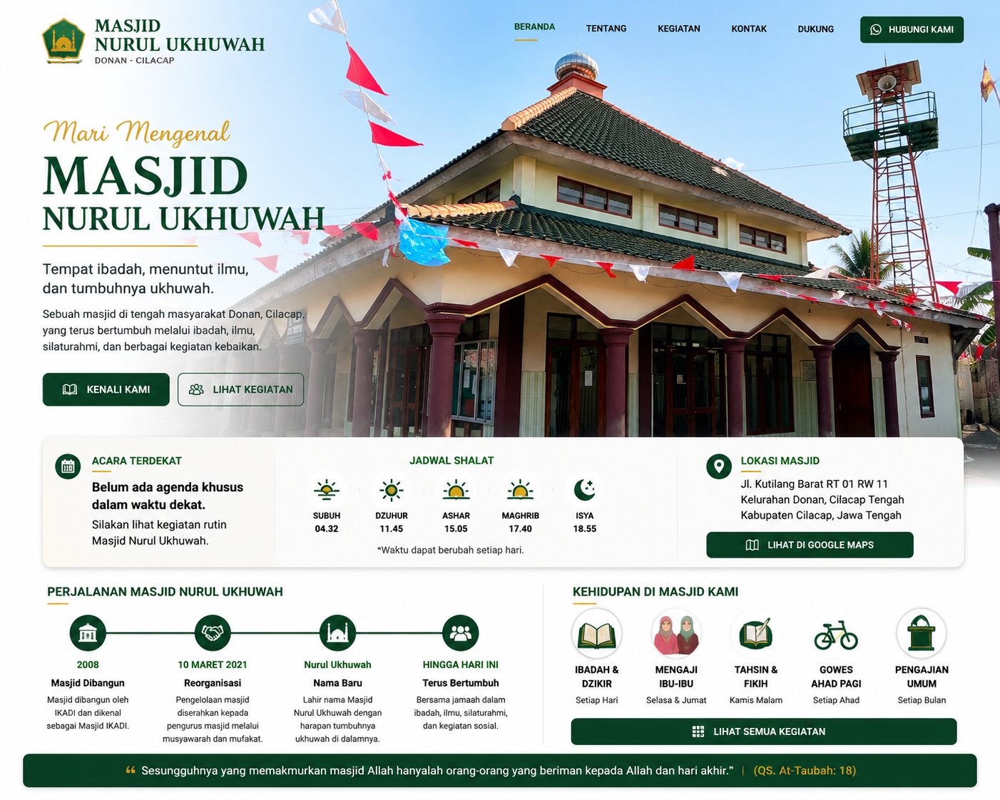

Kehidupan Masjid Kami
Masjid ini terus hidup — setiap hari ada kegiatan, ada jamaah, ada kebaikan yang berjalan.



MARI MENGENAL
Sebuah masjid di tengah masyarakat Donan, Cilacap — tempat ibadah, menuntut ilmu, dan tumbuhnya ukhuwah.
Masjid ini terus hidup — setiap hari ada kegiatan, ada jamaah, ada kebaikan yang berjalan.
Silakan lihat kegiatan rutin di bawah ini atau tanyakan langsung ke pengurus masjid.
Waktu sholat dapat berubah mengikuti posisi matahari. Untuk jadwal yang paling akurat dan terbaru:
🔗 Lihat Jadwal Resmi — KemenagAtau lihat papan pengumuman di masjid setiap hari
Jl. Kutilang Barat
RT 01 RW XI, Kel. Donan
Cilacap Tengah, Jawa Tengah
📮 53222
Masjid Nurul Ukhuwah berdiri pada tahun 2008 oleh IKADI (Ikatan Dai Indonesia), didirikan atas bantuan dana dari Uni Emirat Arab. Dan masyarakat luas & sekitar lebih mengenal masjid ini sebagai Masjid IKADI.
Pada tanggal 10 Maret 2021, dilakukan reorganisasi pengurus sekaligus pergantian nama menjadi Masjid Nurul Ukhuwah — Cahaya Persaudaraan — disaksikan oleh para tokoh masyarakat dan jamaah.
Masjid ini berlandaskan Ahlussunah Wal Jama'ah dan tidak berafiliasi dengan organisasi tertentu. Kami bertekad menjadikan masjid bukan hanya tempat sholat, melainkan pusat kegiatan umat — tempat belajar, berkumpul, dan mempererat tali persaudaraan.
Masjid Dibangun
Oleh IKADI — Ikatan Dai Indonesia. Dikenal masyarakat sebagai Masjid IKADI.
Reorganisasi & Pergantian Nama
Berganti nama menjadi Masjid Nurul Ukhuwah — Cahaya Persaudaraan.
Terus Berkembang
Berbagai kegiatan pendidikan Al-Qur'an, pengajian, sosial, dan dakwah terus berjalan dan berkembang.
Berbagai kegiatan yang menjadi nadi kehidupan masjid — dari ibadah, pendidikan, hingga silaturahmi
Masjid Nurul Ukhuwah memiliki 7 Imam Khotib yang siap bergantian setiap minggu sesuai jadwal rutin — agar jamaah selalu mendapat ilmu dan pengingat yang beragam.
📌 Minggu ke-3 Bulan Genap: Ustadz Eko Junianto, SE
Setiap Selasa & Jumat ba'da Ashar — dibimbing oleh Ustadzah. Berawal dari 3 orang, kini telah berkembang menjadi 13 jamaah. Alhamdulillah!
Setiap Ahad pagi pukul 09.00 — 10.00 WIB. Membaca Al-Qur'an bersama menuju khatam.

Setiap Malam Kamis ba'da Maghrib — menjelang Isya. Dibimbing oleh 2 Ustadz yang ikhlas tanpa imbalan. Belajar fikih dasar dan perbaikan bacaan Al-Qur'an.
Setiap Ahad ketiga ba'da Ashar — terbuka untuk seluruh jamaah dan warga sekitar. Hadir Ustadz/Ustadzah sebagai pembicara.
Setiap Ahad pagi ba'da Subuh — rute 30–50 km. Bertujuan untuk kesehatan sekaligus dakwah melalui silaturahmi. Semoga tumbuh menjadi jamaah masjid yang aktif!

.jpg)


Mengajak untuk tetap konsisten dan semangat melaksanakan sholat Subuh berjamaah — keutamaan yang besar pahalanya. Semoga semakin ramai jamaah setiap harinya!
• Pengajian Umum 4x setiap Ahad ba'da Ashar + pembagian nasi kotak buka puasa
• Tarawih & Kultum Subuh
• I'tikaf 10 hari terakhir
• Buka Puasa Bersama Pengurus
Menjaga kebersihan, keindahan, dan kelayakan masjid — menjadi tanggung jawab bersama. Semoga setiap usaha pemeliharaan menjadi amal jariyah yang pahalanya terus mengalir.
Berbagi kebersamaan dan kebahagiaan kepada warga sekitar masjid — semoga menjadi amal jariyah yang terus mengalir pahalanya.
Kami menyembelih sendiri. Tim kami telah mengikuti pelatihan Juleha dan bersertifikat. Menggunakan alat standar pelatihan — bilah super tajam, tali penahan, hingga proses pengulitan dan pencacahan. Daging dikemas khusus untuk Shohibul Qurban dan dibagikan ke masyarakat sekitar.
📌 Program Tabungan Qurban — tersedia setiap saat! Tahun ini telah diikuti 7 calon Shohibul Qurban.


Sulistiyono
📱 WA: +62 813-2753-0681
Supriyatno
📱 WA: +62 838-7260-5334
Aditia Nugroho
📱 WA: +62 813-1150-9584
📍 Jl. Kutilang Barat, RT 01 RW XI, Kel. Donan, Cilacap Tengah, Jawa Tengah — 53222
🆔 ID Masjid: 01.6.14.01.22.000105
Segala bentuk infak dan sedekah akan digunakan untuk pemeliharaan masjid, kegiatan dakwah, pendidikan Al-Qur'an, dan kebutuhan operasional masjid. Semoga Allah SWT mengganti dengan yang lebih baik dan memberkahi harta Bapak/Ibu sekalian.
🏦 Bank Syariah Indonesia (BSI)
7205811871
a.n. Masjid Nurul Ukhuwah
Program tabungan qurban tersedia setiap saat — bagi yang ingin menabung perlahan untuk hewan qurban tahun depan. Silakan hubungi pengurus untuk pendaftaran.